Sobre Mim
Meu Insta
Comédia
Superbad
⭐ 7,6/10
2007 • Comédia/Adolescente
Se Beber, Não Case!
⭐ 7,7/10
2017 • Comédia/Aventura
Deadpool
⭐ 8,0/10
2016 • Ação/Comédia
Projeto X
⭐ 6,7/10
2012 • Comédia/Ficção policial
Gente Grande
⭐ 6,0/10
2010 • Comédia/Drama
Festa da Salsicha
⭐ 6,1/10
2016 • Comédia/Aventura
Ted
⭐ 6,9/10
2012 • Comédia/Fantasia
Esposa de Mentirinha
⭐ 6,4/10
2011 • Comédia/Romance
Todo Mundo em Pânico
⭐ 6,3/10
2000 • Comédia/Terror
Curtindo a Vida Adoidado
⭐ 7,8/10
1986 • Comédia/Drama
Terror
It: A Coisa
⭐ 7,3/10
2017 • Terror/Mistério
Invocação do Mal
⭐ 7,5/10
2013 • Terror/Mistério
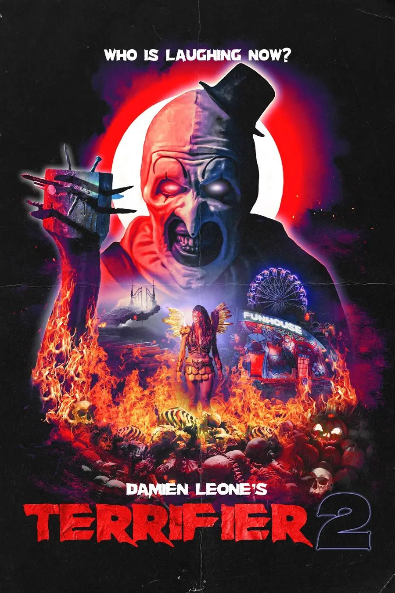
Terrifier 2
⭐ 6,0/10
2022 • Terror/Slasher
Hereditário
⭐ 7,3/10
2018 • Terror/Mistério
Rua do Medo: 1994 - Parte 1
⭐ 6,2/10
2021 • Terror/Mistério
Rua do Medo: 1978 - Parte 2
⭐ 6,7/10
2021 • Terror/Mistério
Rua do Medo: 1666 - Parte 3
⭐ 6,6/10
2021 • Terror/Mistério
Sobrenatural
⭐ 6,8/10
2010 • Terror/Mistério
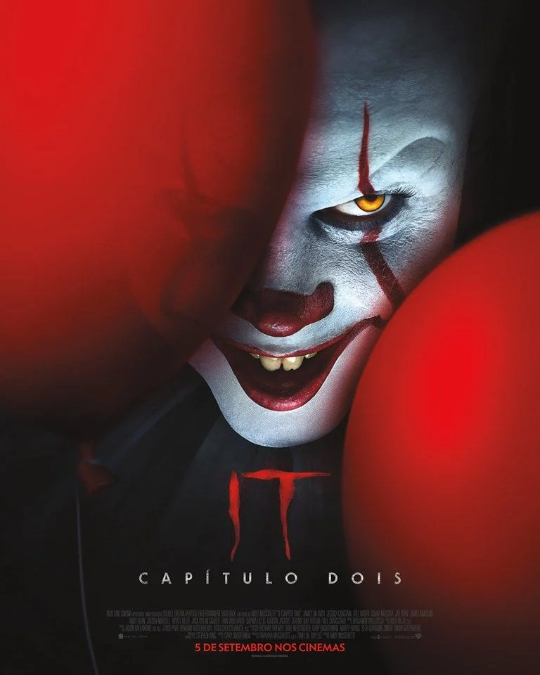
It - Capítulo Dois
⭐ 6,5/10
2019 • Terror/Mistério
Ação
The Batman
⭐ 7,8/10
2022 • Ação/Crime
Thor Ragnarok
⭐ 7,9/10
2017 • Ação/Ficção científica
Star Wars
⭐ 6,8/10
2017 • Ficção científica/Ação
Bailarina
⭐ 6,9/10
2025 • Ação/Thriller
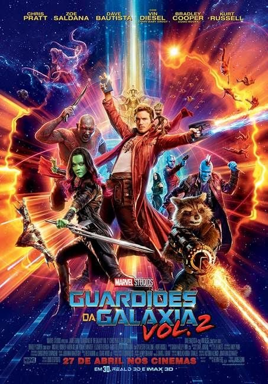
Guardiões da Galáxia
⭐ 7,6/10
2017 • Ação/Ficção científica
Bad Boys para Sempre
⭐ 6,5/10
2020 • Ação/Comédia
Batman: O Cavaleiro das Trevas
⭐ 9,1/10
2008 • Ação/Crime
Top Gun: Maverick
⭐ 8,2/10
2022 • Ação/Aventura
Viúva Negra
⭐ 6,6/10
2021 • Ação/Ficção científica
Deadpool & Wolverine
⭐ 7,5/10
2024 • Ação/Comédia
Suspense
Ilha do Medo
⭐ 8,2/10
2018 • Thriller/Mistério
Fragmentado
⭐ 7,3/10
2016 • Terror/Ficção policial
Uma Noite de Crime
⭐ 5,8/10
2013 • Terror/Ação
A 5° Onda
⭐ 5,2/10
2016 • Ficção científica/Ação
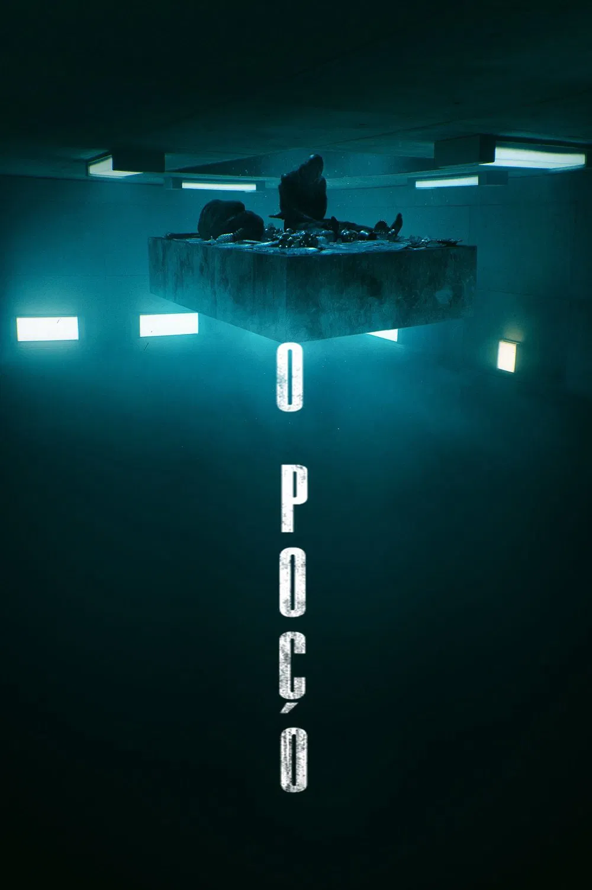
O Poço
⭐ 7,0/10
2019 • Terror/Ficção científica
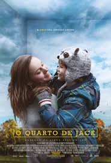
O Quarto de Jack
⭐ 8,1/10
2015 • Thriller/Mistério
O Telefone Preto
⭐ 6,9/10
2021 • Terror/Mistério
Corra!
⭐ 7,8/10
2017 • Terror/Mistério
O Iluminado
⭐ 8,4/10
2019 • Terror/Mistério
Clube da Luta
⭐ 8,8/10
1999 • Ação/Crime
Aventura
Uncharted
⭐ 6,3/10
2022 • Ação/Aventura
O Lar das Crianças Peculiares
⭐ 6,7/10
2016 • Fantasia/Aventura
Superman
⭐ 7,1/10
2025 • Ação/Ficção científica
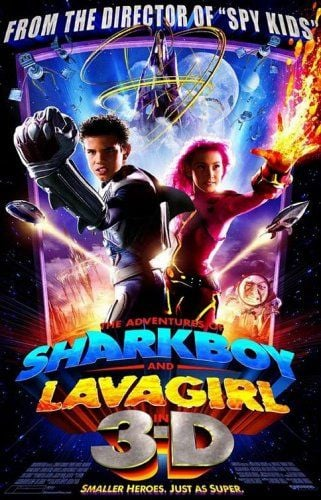
Sharkboy e Lavagirl
⭐ 3,8/10
2005 • Infantil/Aventura
Arca de Noé
⭐ 4,3/10
2024 • Musical/Aventura
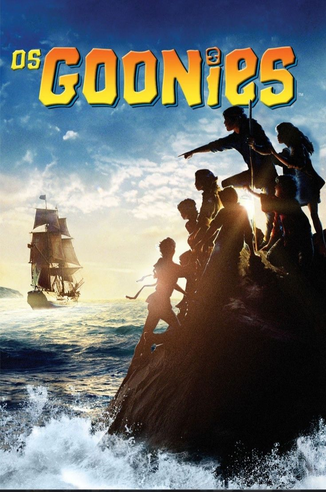
Os Goonies
⭐ 7,7/10
1985 • Infantil/Aventura
A Era do Gelo
⭐ 7,5/10
2002 • Infantil/Comédia
O Impossível
⭐ 7,5/10
2012 • Thriller/Aventura
Minecraft
⭐ 5,6/10
2025 • Fantasia/Aventura
Capitão América: O Primeiro Vingador
⭐ 6,9/10
2011 • Ação/Ficção científica
Com a família
A Fuga das Galinhas
⭐ 7,1/10
2000 • Infantil/Comédia
Super Mario Bros. O Filme
⭐ 7,0/10
2023 • Infantil/Comédia
Homem-Aranha: Sem Volta para Casa
⭐ 8,2/10
2021 • Ação/Fantasia
Sonic 3 - O Filme
⭐ 6,9/10
2024 • Comédia/Aventura
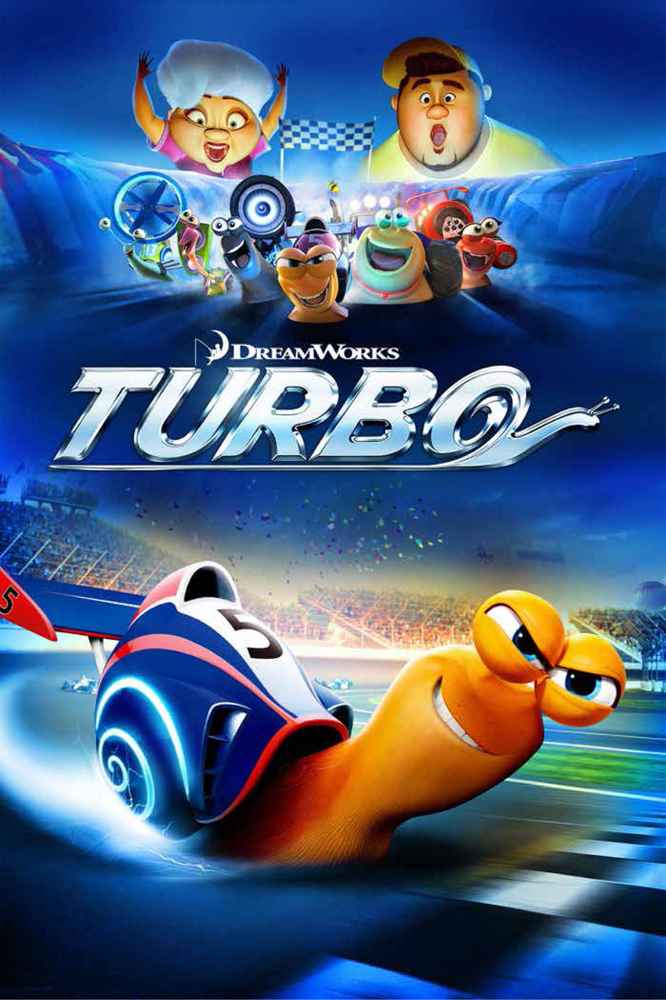
Turbo
⭐ 6,4/10
2013 • Esporte/Aventura
Guerreiras do K-Pop
⭐ 7,6/10
2025 • Musical/Ação
Shrek
⭐ 7,9/10
2001 • Comédia/Fantasia
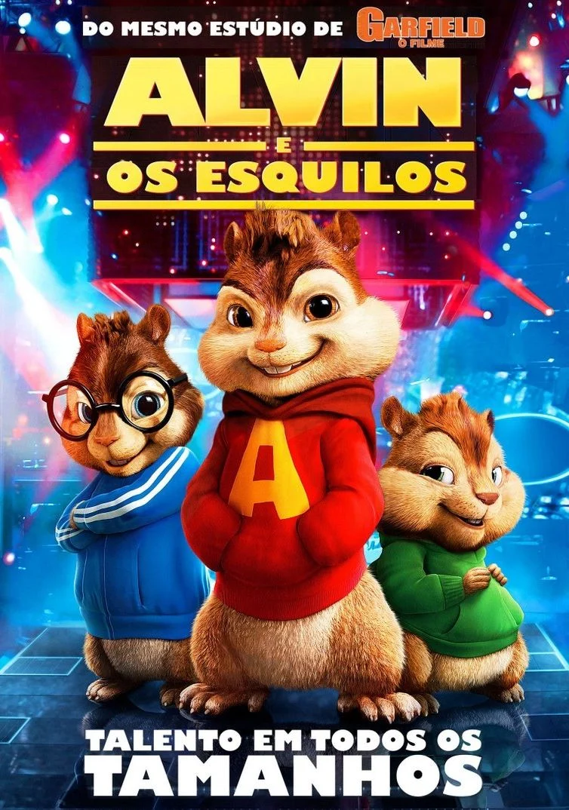
Alvin e os Esquilos
⭐ 5,3/10
2007 • Infantil/Comédia
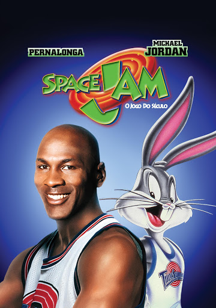
Space Jam: O Jogo do Século
⭐ 6,5/10
1996 • Infantil/Esporte
Space Jam: Um Novo Legado
⭐ 4,5/10
2021 • Infantil/Comédia
Romance
Para Todos os Garotos que Já Amei
⭐ 7,0/10
2018 • Romance/Comédia
Como Se Fosse a Primeira Vez
⭐ 6,8/10
2004 • Comédia/Romance
A Culpa é das Estrelas
⭐ 7,6/10
2014 • Romance/Comédia
O Date Perfeito
⭐ 5,8/10
2019 • Comédia/Romance
10 Coisas Que Eu Odeio Em Você
⭐ 7,4/10
1999 • Comédia/Romance
A Barraca do Beijo
⭐ 5,9/10
2018 • Romance/Comédia
Nu
⭐ 5,4/10
2017 • Comédia/Romance
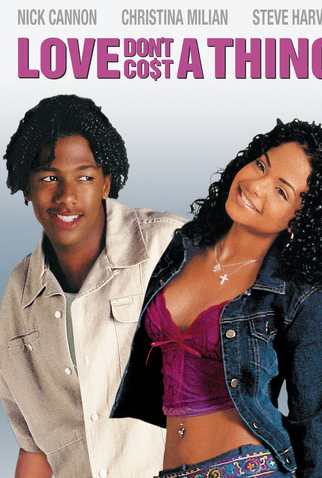
Amor de Aluguel
⭐ 5,3/10
2003 • Comédia/Romance
Através da Minha Janela
⭐ 5,5/10
2022 • Romance/Comédia
Sua Culpa
⭐ 5,2/10
2024 • Romance/Drama
Baseado na vida real
Mamonas Assassinas - O Filme
⭐ 4,7/10
2023 • Comédia/Biografia
Oppenheimer
⭐ 8,3/10
2023 • Suspense
Straight Outta Compton: A História do N.W.A.
⭐ 7,8/10
2015 • Musical/Crime
Titanic
⭐ 7,9/10
1997 • Romance/Aventura
Nosso Sonho
⭐ 7,2/10
2023 • Musical/Comédia
À Procura da Felicidade
⭐ 8,0/10
2006 • Infantil/Drama
O Jogo da Imitação
⭐ 8,0/10
2014 • Thriller/Guerra
O Menino Que Descobriu o Vento
⭐ 7,6/10
2019 • Drama/História
A Queda! As Últimas Horas de Hitler
⭐ 8,2/10
2004 • Guerra/Documentário
O Pianista
⭐ 8,5/10
2002 • Guerra/Drama
Drama
O Menino do Pijama Listrado
⭐ 7,7/10
2008 • Guerra/Thriller
A Cinco Passos de Você
⭐ 7,2/10
2019 • Romance/Drama
Como Eu Era Antes de Você
⭐ 7,4/10
2016 • Romance/Drama
O Milagre da Fé
⭐ 6,3/10
2019 • Drama/Melodrama
Milagre na Cela 7
⭐ 8,2/10
2019 • Drama/Melodrama
À Espera de um Milagre
⭐ 8,6/10
1999 • Crime/Fantasia
Scarface
⭐ 8,3/10
1983 • Crime/Thriller
Intocáveis
⭐ 8,5/10
2011 • Comédia/Drama
O Poderoso Chefão
⭐ 9,2/10
1972 • Crime/Ficção policial
Forrest Gump: O Contador de Histórias
⭐ 8,8/10
1994 • Comédia/Romance
Campeões de bilheteria
Avatar
⭐ 7,9/10
2009 • Ficção científica/Ação
Avatar: O Caminho da Água
⭐ 7,5/10
2022 • Ação/Ficção científica
Star Wars: O Despertar da Força
⭐ 7,7/10
2015 • Ficção científica/Ação
Divertida Mente 2
⭐ 7,5/10
2024 • Infantil/Comédia
Pantera Negra
⭐ 7,3/10
2018 • Ação/Ficção científica
Frozen 2
⭐ 6,8/10
2019 • Infantil/Fantasia
Barbie
⭐ 6,8/10
2023 • Comédia/Fantasia
Os Incríveis 2
⭐ 7,5/10
2018 • Infantil/Ação
Homem de Ferro 3
⭐ 7,1/10
2013 • Ação/Ficção científica
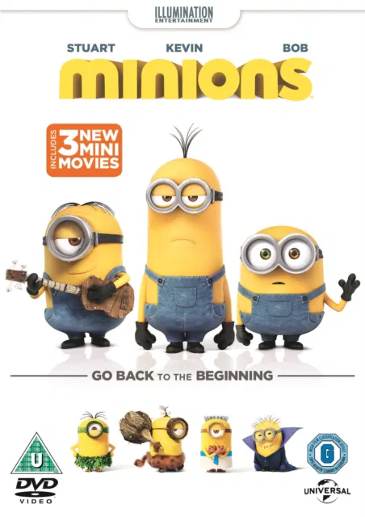
Minions
⭐ 6,4/10
2015 • Infantil/Comédia
Ficção científica
Interestelar
⭐ 8,7/10
2014 • Ficção científica/Aventura
Logan
⭐ 8,1/10
2017 • Ação/Ficção científica
Planeta dos Macacos: A Guerra
⭐ 7,4/10
2016 • Ação/Ficção científica
WALL-E
⭐ 8,4/10
2008 • Infantil/Ficção científica
E.T. O Extraterrestre
⭐ 7,9/10
1982 • Infantil/Ficção científica
Matrix
⭐ 8,7/10
1999 • Ação/Ficção científica
O Exterminador do Futuro
⭐ 8,1/10
1984 • Ação/Ficção científica
Jurassic Park - O Parque dos Dinossauros
⭐ 8,2/10
1993 • Aventura/Ficção científica
De Volta para o Futuro
⭐ 8,5/10
1985 • Infantil/Ficção científica
Blade Runner 2049
⭐ 8,0/10
2017 • Ficção científica/Ação
Nacionais
Cidade de Deus
⭐ 8,6/10
2002 • Crime/Drama
O Auto da Compadecida
⭐ 8,6/10
2000 • Comédia/Aventura
Tropa de Elite
⭐ 8,0/10
2007 • Crime/Ação
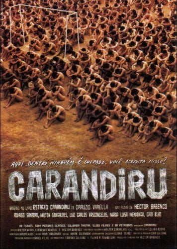
Carandiru: O Filme
⭐ 7,6/10
2003 • Crime/Drama
Ainda Estou Aqui
⭐ 8,1/10
2024 • Drama/drama histórico
Central do Brasil
⭐ 8,0/10
1998 • Drama/Filme de estrada
Tropa de Elite 2: O Inimigo Agora é Outro
⭐ 8,0/10
2010 • Ação/Thriller
Minha Mãe É uma Peça
⭐ 6,9/10
2013 • Comédia
Bacurau
⭐ 7,3/10
2019 • Faroeste/Ficção científica
Chico Bento e a Goiabeira Maraviósa
⭐ 7,4/10
2024 • Aventura
Sagas imperdíveis
Velozes & Furiosos
⭐ 6,8/10
2001 • Ação/Crime
+ Velozes + Furiosos
⭐ 5,9/10
2003 • Ação/Crime
Velozes & Furiosos: Desafio em Tóquio
⭐ 6,1/10
2006 • Ação/Crime
Velozes e Furiosos 4
⭐ 6,5/10
2009 • Ação/Crime
Velozes e Furiosos 5: Operação Rio
⭐ 7,3/10
2011 • Ação/Crime
Velozes e Furiosos 6
⭐ 7,0/10
2013 • Ação/Thriller
Velozes & Furiosos 7
⭐ 7,1/10
2015 • Ação/Thriller
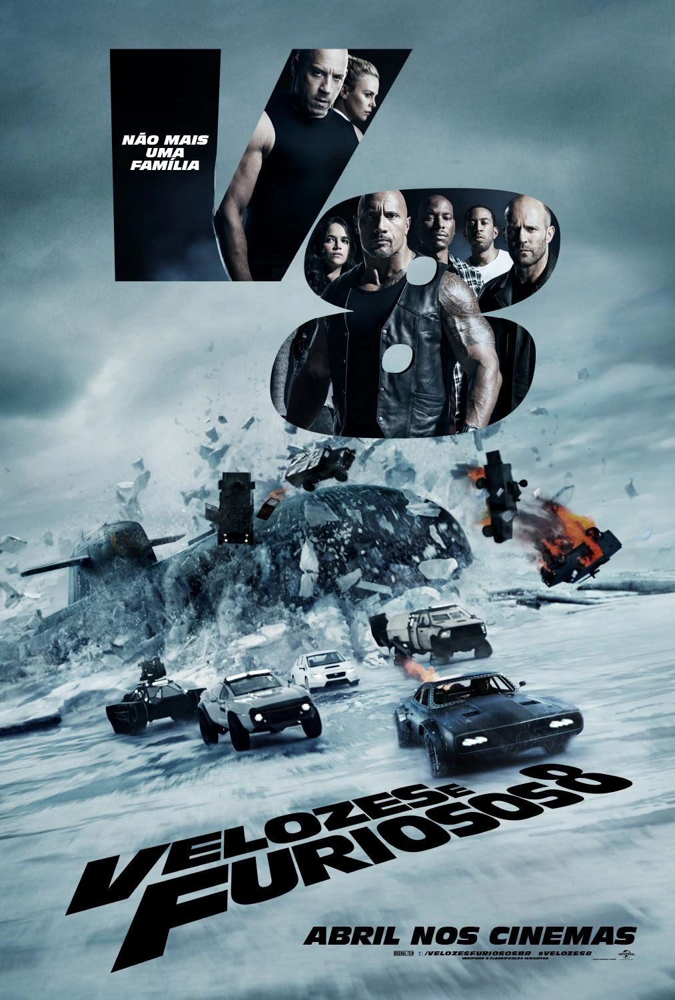
Velozes e Furiosos 8
⭐ 6,6/10
2017 • Ação/Thriller
Velozes e Furiosos 9
⭐ 5,2/10
2021 • Ação/Thriller
Velozes e Furiosos 10
⭐ 5,7/10
2023 • Ação/Crime
Os Vingadores
⭐ 8,0/10
2012 • Ação/Aventura
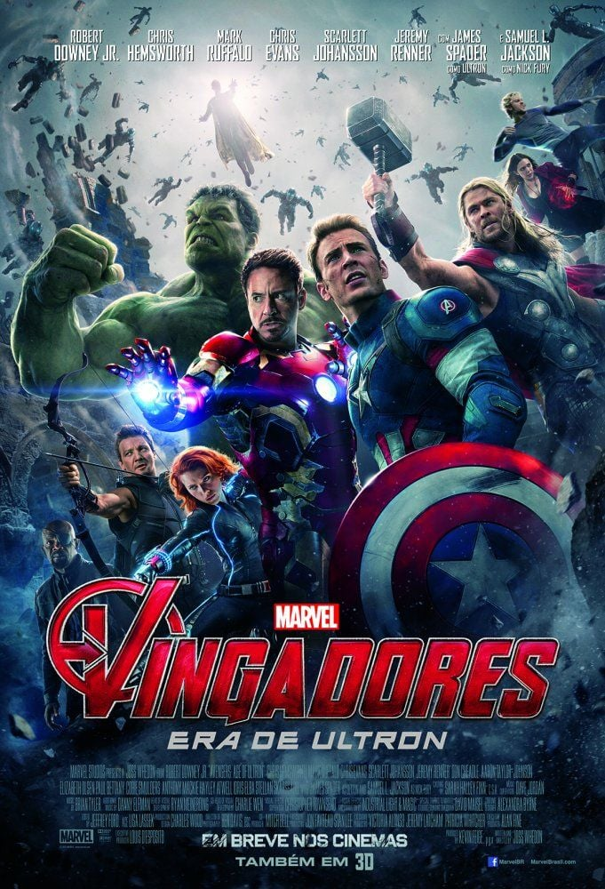
Vingadores: Era de Ultron
⭐ 7,3/10
2015 • Ação/Ficção científica
Vingadores: Guerra Infinita
⭐ 8,4/10
2018 • Ação/Ficção científica
Vingadores: Ultimato
⭐ 8,4/10
2019 • Ação/Ficção científica
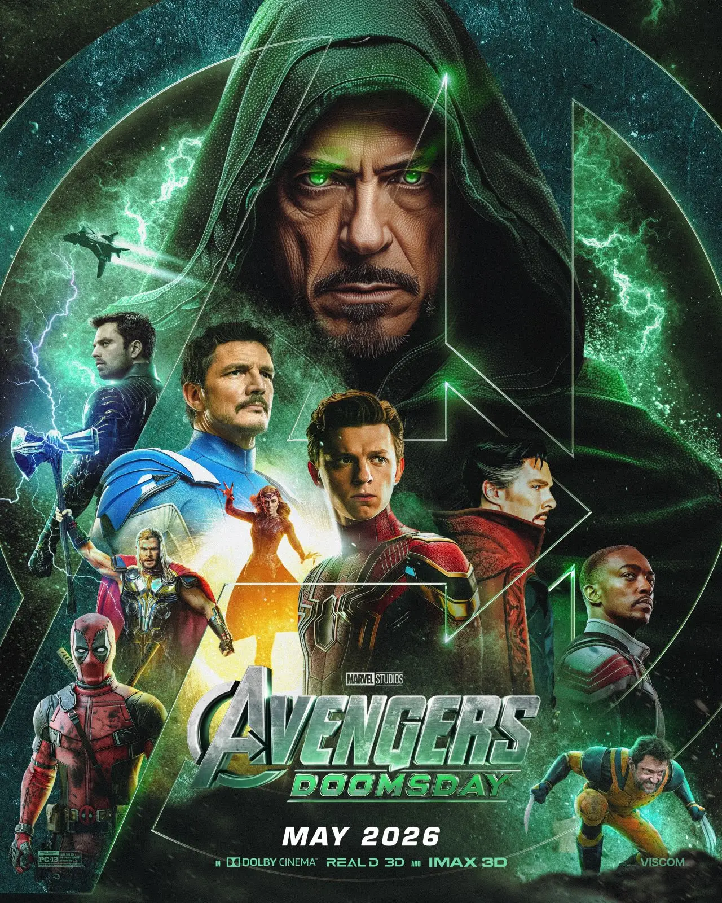
Vingadores: Doomsday
⭐ ?/10
2026 • Ficção científica/Ação
Harry Potter e a Pedra Filosofal
⭐ 7,7/10
2001 • Infantil/Fantasia
Harry Potter e a Câmara Secreta
⭐ 7,5/10
2002 • Infantil/Fantasia
Harry Potter e o Prisioneiro de Azkaban
⭐ 7,9/10
2004 • Infantil/Fantasia
Harry Potter e o Cálice de Fogo
⭐ 7,7/10
2005 • Infantil/Fantasia
Harry Potter e a Ordem da Fênix
⭐ 7,5/10
2007 • Fantasia/Aventura
Harry Potter e o Enigma do Príncipe
⭐ 7,6/10
2009 • Infantil/Fantasia
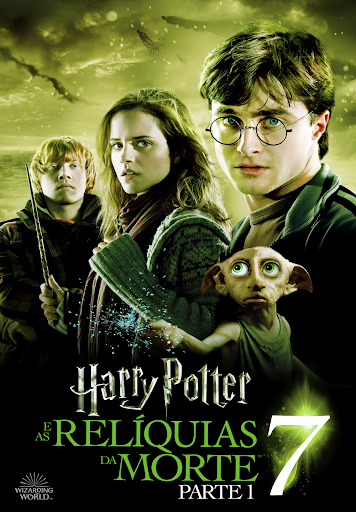
Harry Potter e as Relíquias da Morte - Parte 1
⭐ 7,7/10
2010 • Infantil/Fantasia
Harry Potter e as Relíquias da Morte - Parte 2
⭐ 8,1/10
2011 • Fantasia/Aventura
Séries
Stranger Things
⭐ 8,6/10
2016 • Terror
Breaking Bad
⭐ 9,5/10
2013 • Drama
The Umbrella Academy
⭐ 7,8/10
2019 • Drama
Como Vender Drogas Online (Rápido)
⭐ 7,8/10
2019 • Drama
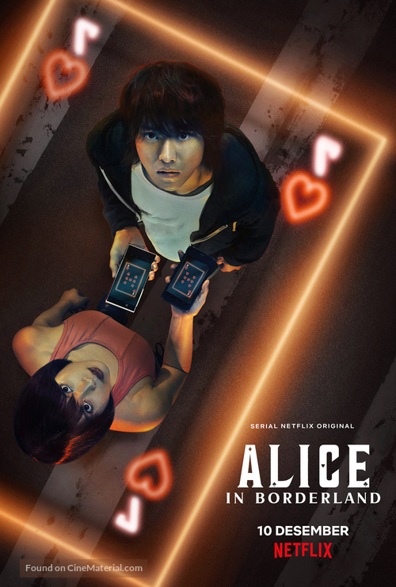
Alice in Borderland
⭐ 7,8/10
2020 • Thriller
The Office
⭐ 9,0/10
2005 • Sitcom
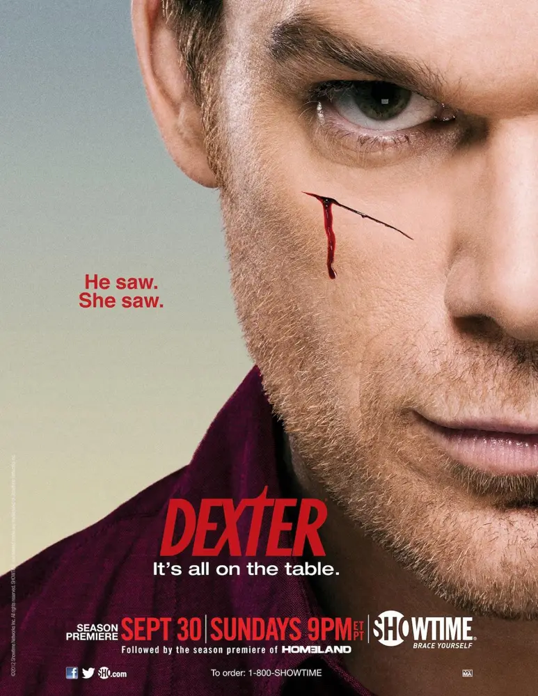
Dexter
⭐ 8,6/10
2006 • Drama
Cidade dos Homens
⭐ 7,2/10
2002 • Drama
It: Bem-Vindos a Derry
⭐ 7,8/10
2025 • Terror
The Last of Us
⭐ 8,5/10
2023 • Drama
Animação
Toy Story
⭐ 8,3/10
1995 • Infantil/Comédia
Por Água Abaixo
⭐ 6,6/10
2006 • Infantil/Comédia
O Segredo dos Animais
⭐ 5,6/10
2006 • Comédia/Aventura
Carros
⭐ 7,3/10
2006 • Infantil/Comédia
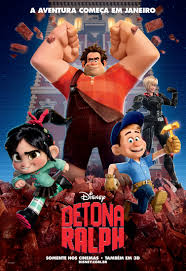
Detona Ralph
⭐ 7,7/10
2012 • Infantil/Comédia
Madagascar
⭐ 6,9/10
2005 • Infantil/Comédia
Up: Altas Aventuras
⭐ 8,3/10
2009 • Infantil/Aventura
Procurando Nemo
⭐ 8,2/10
2003 • Infantil/Aventura
Rio
⭐ 6,9/10
2011 • Infantil/Aventura
Ratatouille
⭐ 8,1/10
2007 • Infantil/Comédia
Documentários
Travis Scott: Voando Alto
⭐ 6,3/10
2019 • Documentário/Musical
NBA: 5 em Quadra
⭐ 7,2/10
2024 • Esportes
Arremesso Final
⭐ 9,0/10
2020 • Documentário
Racionais
⭐ 8,2/10
2022 • Documentário/Musical
A Queda de P.Diddy
⭐ 6,5/10
2025 • Documentário
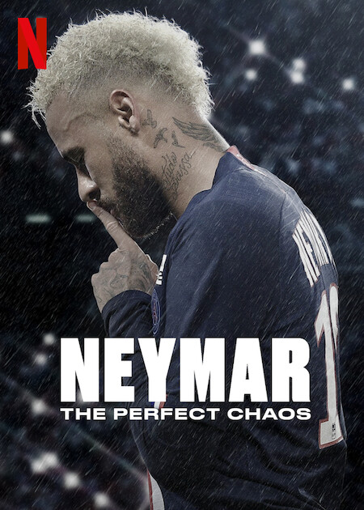
Neymar - O Caos Perfeito
⭐ 6,6/10
2022 • Documentário
Brasil 2002 - Os Bastidores do Penta
⭐ 7,3/10
2022 • Documentário
O Time da Redenção
⭐ 7,4/10
2022 • Documentário/Esporte
F1: Dirigir Para Viver
⭐ 8,5/10
2019 • Documentário
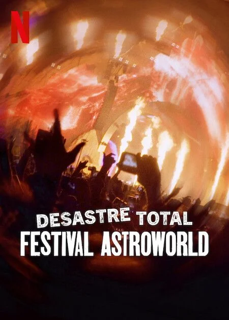
Desastre Total: Festival Astroworld
⭐ 6,7/10
2025 • Documentário
 Interestelar
Interestelar

 Superbad
Superbad

 Se Beber, Não Case!
Se Beber, Não Case!
 Deadpool
Deadpool


 Gente Grande
Gente Grande
 Festa da Salsicha
Festa da Salsicha
 Ted
Ted

 Todo Mundo em Pânico
Todo Mundo em Pânico

 It: A Coisa
It: A Coisa
 Invocação do Mal
Invocação do Mal
 Hereditário
Hereditário
 Rua do Medo: 1994 - Parte 1
Rua do Medo: 1994 - Parte 1

 Rua do Medo: 1666 - Parte 3
Rua do Medo: 1666 - Parte 3

 The Batman
The Batman


 Bailarina
Bailarina
 Bad Boys para Sempre
Bad Boys para Sempre
 Batman: O Cavaleiro das Trevas
Batman: O Cavaleiro das Trevas


 Fragmentado
Fragmentado
 Uma Noite de Crime
Uma Noite de Crime
 O Telefone Preto
O Telefone Preto
 Corra!
Corra!
 O Iluminado
O Iluminado


 Superman
Superman
 Arca de Noé
Arca de Noé
 A Era do Gelo
A Era do Gelo

 Minecraft
Minecraft

 A Fuga das Galinhas
A Fuga das Galinhas
 Super Mario Bros. O Filme
Super Mario Bros. O Filme

 Sonic 3 - O Filme
Sonic 3 - O Filme
 Guerreiras do K-Pop
Guerreiras do K-Pop
 Space Jam: Um Novo Legado
Space Jam: Um Novo Legado

 Como Se Fosse a Primeira Vez
Como Se Fosse a Primeira Vez


 Sua Culpa
Sua Culpa

 Oppenheimer
Oppenheimer
 Straight Outta Compton: A História do N.W.A.
Straight Outta Compton: A História do N.W.A.

 À Procura da Felicidade
À Procura da Felicidade


 A Queda! As Últimas Horas de Hitler
A Queda! As Últimas Horas de Hitler
 O Pianista
O Pianista


 Milagre na Cela 7
Milagre na Cela 7

 Forrest Gump: O Contador de Histórias
Forrest Gump: O Contador de Histórias

 Divertida Mente 2
Divertida Mente 2
 Pantera Negra
Pantera Negra
 Frozen 2
Frozen 2

 Os Incríveis 2
Os Incríveis 2

 WALL-E
WALL-E
 E.T. O Extraterrestre
E.T. O Extraterrestre
 Matrix
Matrix
 O Exterminador do Futuro
O Exterminador do Futuro


 Blade Runner 2049
Blade Runner 2049
 Cidade de Deus
Cidade de Deus
 Tropa de Elite
Tropa de Elite
 Ainda Estou Aqui
Ainda Estou Aqui

 Bacurau
Bacurau
 Chico Bento e a Goiabeira Maraviósa
Chico Bento e a Goiabeira Maraviósa

 + Velozes + Furiosos
+ Velozes + Furiosos
 Velozes & Furiosos: Desafio em Tóquio
Velozes & Furiosos: Desafio em Tóquio
 Velozes e Furiosos 4
Velozes e Furiosos 4
 Velozes e Furiosos 5: Operação Rio
Velozes e Furiosos 5: Operação Rio
 Velozes e Furiosos 6
Velozes e Furiosos 6
 Velozes & Furiosos 7
Velozes & Furiosos 7
 Velozes e Furiosos 9
Velozes e Furiosos 9
 Velozes e Furiosos 10
Velozes e Furiosos 10


 Harry Potter e a Pedra Filosofal
Harry Potter e a Pedra Filosofal
 Harry Potter e a Câmara Secreta
Harry Potter e a Câmara Secreta
 Harry Potter e o Prisioneiro de Azkaban
Harry Potter e o Prisioneiro de Azkaban


 Stranger Things
Stranger Things
 Breaking Bad
Breaking Bad
 The Umbrella Academy
The Umbrella Academy


 Cidade dos Homens
Cidade dos Homens
 It: Bem-Vindos a Derry
It: Bem-Vindos a Derry
 The Last of Us
The Last of Us
 Toy Story
Toy Story
 Por Água Abaixo
Por Água Abaixo
 O Segredo dos Animais
O Segredo dos Animais
 Carros
Carros
 Madagascar
Madagascar
 Up: Altas Aventuras
Up: Altas Aventuras
 Procurando Nemo
Procurando Nemo
 Rio
Rio
 Ratatouille
Ratatouille
 Travis Scott: Voando Alto
Travis Scott: Voando Alto
 Arremesso Final
Arremesso Final
 Racionais
Racionais
 A Queda de P.Diddy
A Queda de P.Diddy
 F1: Dirigir Para Viver
F1: Dirigir Para Viver